> ITCH.IO NEWS
-
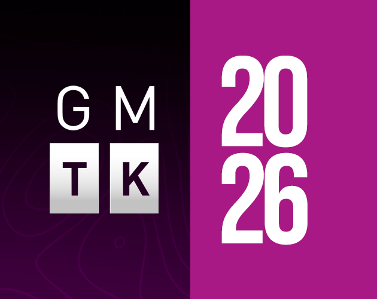
[ JAM ] GMTK Game Jam 2026 Opens July 22Mark Brown's Game Maker's Toolkit Jam — itch.io's biggest annual jam — opens submissions July 22 at 5pm through July 26 at 5pm, with 22,200+ participants already joined ahead of the theme reveal. Source: itch.io
-
[ PLATFORM ]
itch.io Changelog: Sale Explorer, Patreon Integration & More
itch.io founder leafo posted a changelog on July 2, 2026 recapping quietly-shipped platform features: a new Sale Explorer for browsing discounts, a revamped bundle hosting system, a Jam Theme Editor, and Patreon integration that lets creators grant patrons access to their itch.io pages. Source: itch.io blog
-
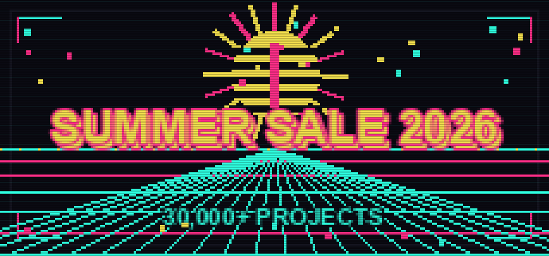
[ SALE ENDED ] itch.io Summer Sale 2026 Wraps UpThe Summer Sale — and the Power of Pride Bundle's 396 projects from 284 queer creators — both closed on July 6, 2026. The sale put 30,000+ projects on discount, the first big outing for the new Sale Explorer browsing tool. Source: itch.io blog
> INDIE SCENE
-
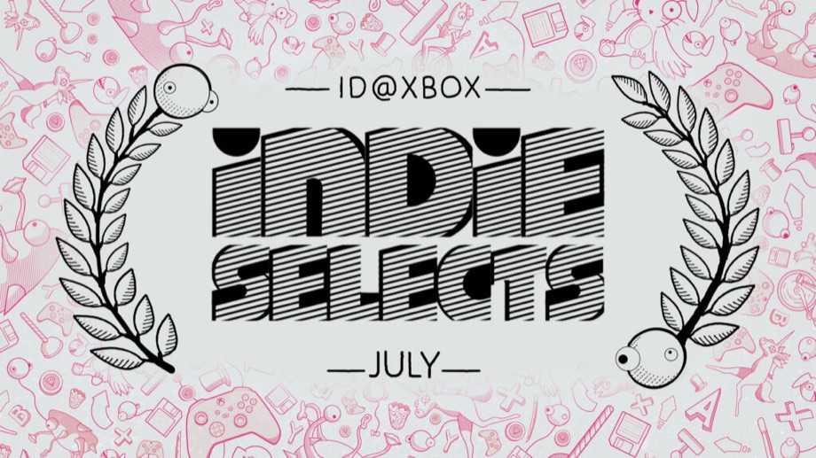
[ SPOTLIGHT ] Xbox Indie Selects — July 2026The ID@Xbox team's five hand-picked indies for July: Mina the Hollower (Yacht Club Games, $19.99), Realm of Ink, Bellwright, Coffee Talk Tokyo, and NBA THE RUN — most with Xbox Play Anywhere support. Source: Xbox Wire
> INDIE GAME RELEASES — JULY 2026
-
JUL 01 Cat Squeeze
Puzzle game guiding a cat through pipes and mazes.
-
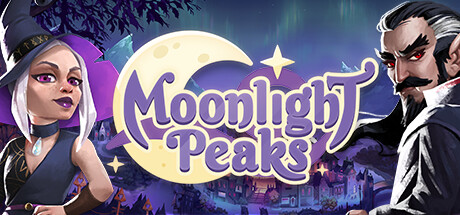
-
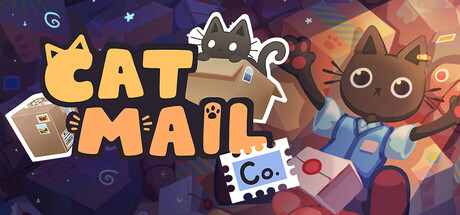
JUL 09 Cat Mail Co.Cozy cat post-office sim by Maracas Studio — sort and deliver parcels by day, let the moon reveal hidden truths about packages at night. Steam
-
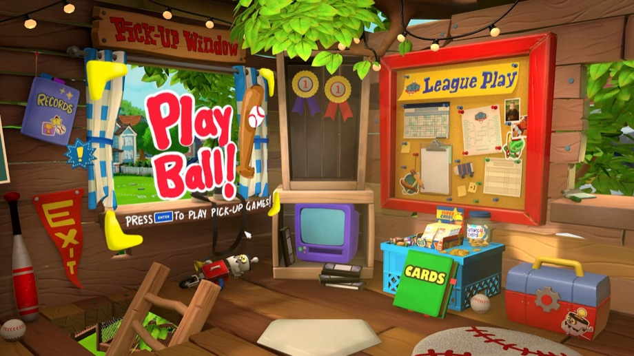
-
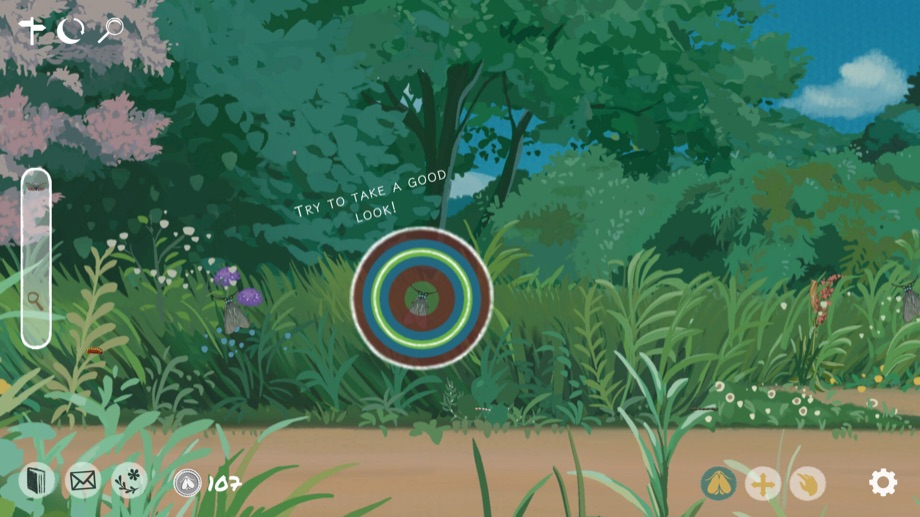
-
JUL 13 Ascend to ZERO
Roguelike where mastering time itself is the key to survival.
-
JUL 14 D-topia
Puzzle game set in an AI-curated world with slower, relaxed vibes.
-
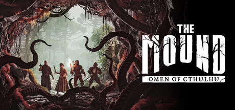
JUL 15 The Mound: Omen of Cthulhu4-player co-op cosmic horror from ACE Team (Zeno Clash) — conquistador-era expeditions where creeping madness makes allies look like monsters. PC/PS5/Xbox Series. Gematsu
-
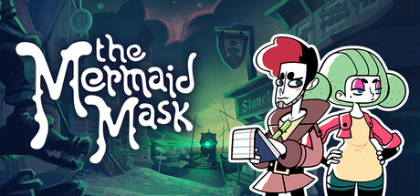
JUL 16 The Mermaid MaskMurder-mystery sequel to Tangle Tower (2019) by SFB Games, releasing on PC/PS5/Switch/Switch 2.
-
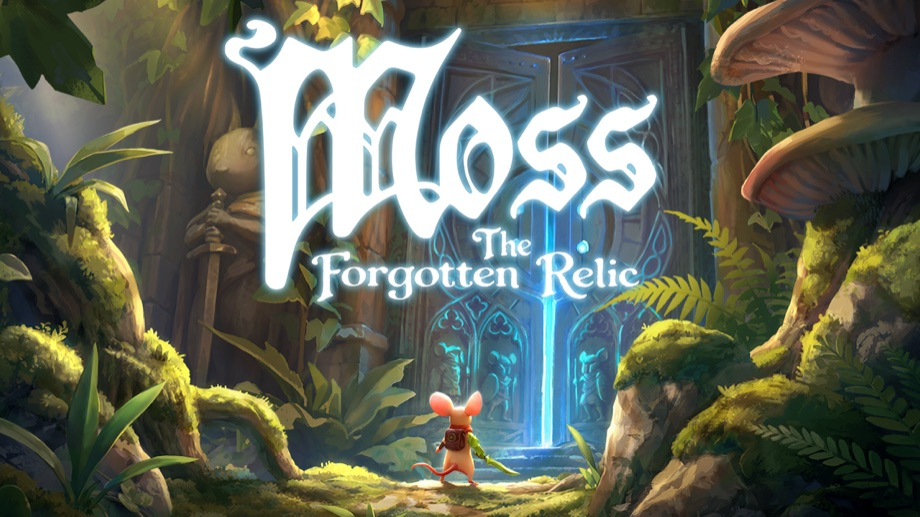
JUL 16 Moss: The Forgotten RelicPolyarc's storybook adventure unites Moss and Moss: Book II, enhanced for its PC debut — PC/PS5/Xbox/Switch 1&2, Steam Deck verified. Steam
-
JUL 16 Dead Weight
Steampunk tactical roguelite from Klukva Games — sail a flying pirate ship between floating islands, recruit a crew, and fight the Ancient Gods in turn-based battles on tiny battlefields. Over 120,000 wishlists. Steam · Noisy Pixel
-
JUL 16 Funnel Runners
First-person co-op survival game from Supernova Studios — trapped with up to 7 friends in a doomed city, scavenge parts and fix your van before an escalating tornado tears the map apart. Steam · Niche Gamer
-
JUL 20 Raccoons to Riches
Roguelike deckbuilder starring a money-obsessed raccoon.
-
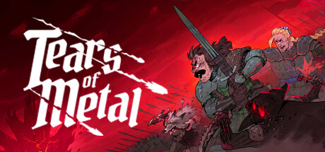
-
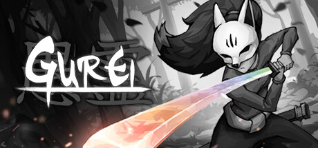
JUL 23 GureiBoss-rush game where defeating enemies lets you steal their powers.
-
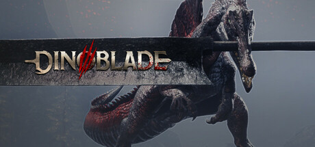
JUL 23 DinobladeAction RPG starring a Great Sword-wielding Spinosaurus, from a Sucker Punch senior animator — timing-focused combat against armed rival dinos. Steam
-
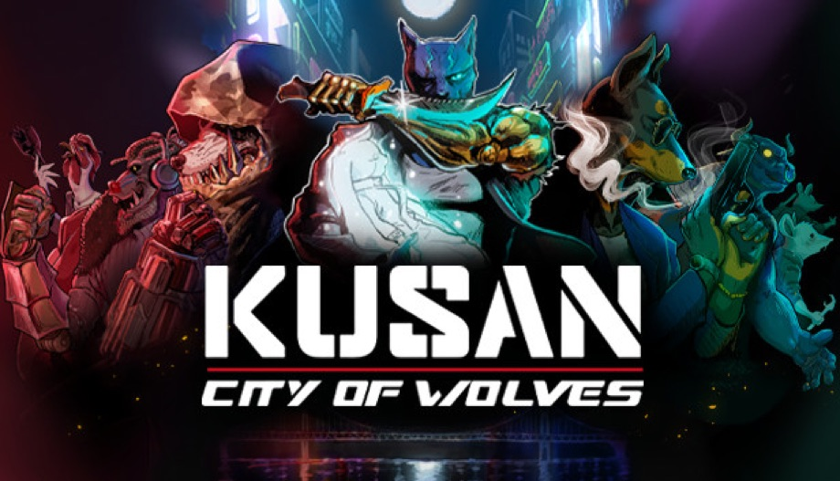
JUL 30 Kusan: City of WolvesTop-down shooter with a Hotline Miami vibe.
-
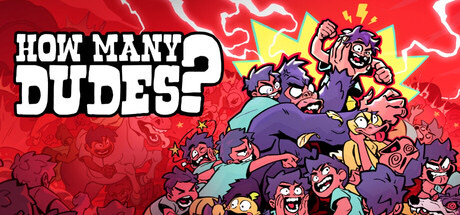
JUL 30 How Many Dudes?Free-to-play roguelike dudebuilder from Butterscotch Shenanigans (Crashlands) — recruit 42 unique Dude types across game-breaking synergy runs; its demo got its start in the itch.io GMTK Game Jam. Steam · itch.io demo
-
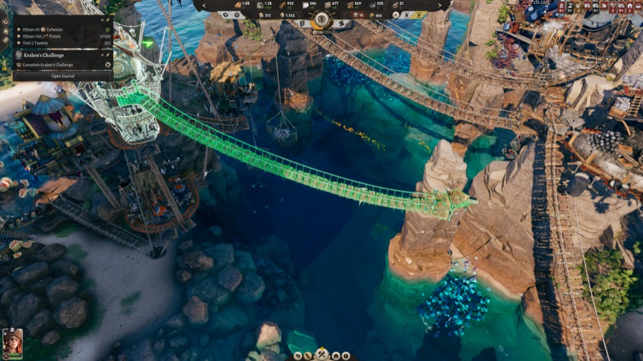
JUL 31 Corsair CovePirate-themed city builder turning a deserted island into a settlement.
Release list sources: Green Man Gaming — Indie Game Release Round-Up, July 2026, plus per-entry Steam / press links above. Game artwork: official Steam store assets, © their respective developers and publishers.
> ABOUT
CyberCycho is a curated digest of itch.io.